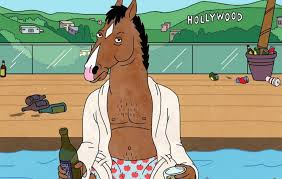
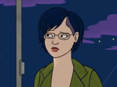
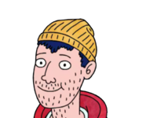
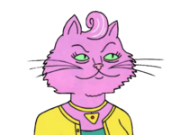
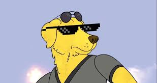
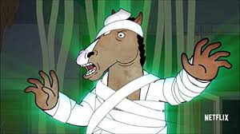
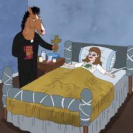
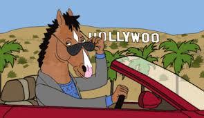

Plot
BoJack Horseman is an animated TV series from Netflix, originally premiering on August 22, 2014. It follows BoJack, an anthropomorphic horse who used to star in the popular fictional 1990s TV sitcom Horsin' Around. Eighteen years later, BoJack's fame has dried up. The series tells the story of BoJack trying to rekindle his fame by writing a tell-all memoir, and also documents all the marvelous mishaps and strange situations he and his friends get themselves into in the fictional parody of Hollywood, "Hollywoo" (the letter "D" was destroyed in the series).
BoJack plans his big return to celebrity relevance with a tell-all autobiography that he dictates to his ghostwriter Diane Nguyen. BoJack also has to contend with the demands of his agent and on-again-off-again girlfriend Princess Carolyn, the misguided antics of his freeloading roommate Todd Chavez, and his friend and rival Mr. Peanutbutter.
From http://bojackhorseman.wikia.com/wiki/BoJack_Horseman_Wiki
From https://en.wikipedia.org/wiki/BoJack_Horseman
Production
In the fall of 2010, BoJack Horseman creator Raphael Bob-Waksberg met with The Tornante Company producer Steven A. Cohen and pitched five different animated projects, from which BoJack Horseman was chosen. Bob-Waksberg later met with The Tornante Company CEO Michael Eisner, who suggested that the show center around a former racehorse rather than a former sitcom actor. While they settled on the show-business angle, this contributed to a storyline in which BoJack played a racehorse in the fictional movie Secretariat.
In the summer of 2011, Lisa Hanawalt was asked to work as a designer on the show. She initially turned down the offer, which she has said was because she was "kind of commitment-phobic". She eventually took the job six months later.[46] She then worked with animation production studio ShadowMachine to develop the show's visual style.
Bob-Waksberg pitched BoJack Horseman to Netflix in October 2013, and it was picked up for a first season that was released in August 2014.
Writers for BoJack Horseman include Bob-Waksberg, Joe Lawson, Kate Purdy, Elijah Aron, Jordan Young Mehar Sethi, and Joanna Calo. Directors include Amy Winfrey, J.C. Gonzalez, Mike Hollingsworth, Aaron Long, and Anne Walker Farrell.
From https://en.wikipedia.org/wiki/BoJack_Horseman
Music
The main title theme was composed by Patrick Carney, drummer for the blues-rock duo The Black Keys, with his uncle Ralph Carney. The main sound, starting at the beginning, is a Roland Jupiter-4 analog synthesizer triggered with a click track in ProTools.
The ending credits theme "Back in the 90s (BoJack's Theme)" was performed by the indie-pop act Grouplove. Jesse Novak composed the incidental music.
In addition, the show featured Lyla Foy's song "Impossible" in the end credits of the seventh episode of the first season, the Death Grips song "No Love" in the eleventh episode of the first season, and the Rolling Stones song "Wild Horses" and Tegan and Sara's "Closer" in the season finale. The Kevin Morby song "Parade" closed out episode ten of the second-season, and the Courtney Barnett song "Avant Gardener" plays during the second-season finale. Nina Simone's cover of Janis Ian's "Stars" closed out the last episode of the third season. The show also features Oberhofer's song "Sea of Dreams" on the fourth episode of the third season, "Fish out of Water", Magic Sword's "Infinite" on the fifth episode of the fourth season, K.Flay's "Blood in the Cut" on the sixth episode of the fourth season, and Jenny Owen Youngs's Wake Up on the twelfth episode of the fourth season. Princess Carolyn's hold music is the song "Jellicle Songs for Jellicle Cats" from the musical Cats. The St. Vincent song "Los Ageless" plays throughout the first episode of the fifth season, including the credits. The song "Under Pressure" by The War on Drugs plays through the end of the show and into the credits of Season 5, Episode 12 "The Stopped Show".
From https://en.wikipedia.org/wiki/BoJack_Horseman